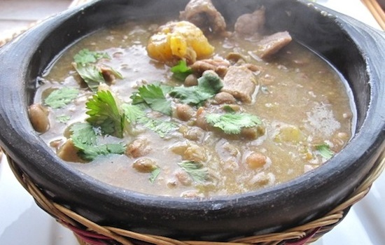

Sopa de Guandú
- 6
- 1:00:00hr. aprox.
- Media
Caldo Levanta Muertos como dicen los costeños, o como es bien conocido, la Sopa de Guandú. Un sancocho espeso que mezcla algunos ingredientes colombianos con el famoso guandú para lograr un sabor exquisito...